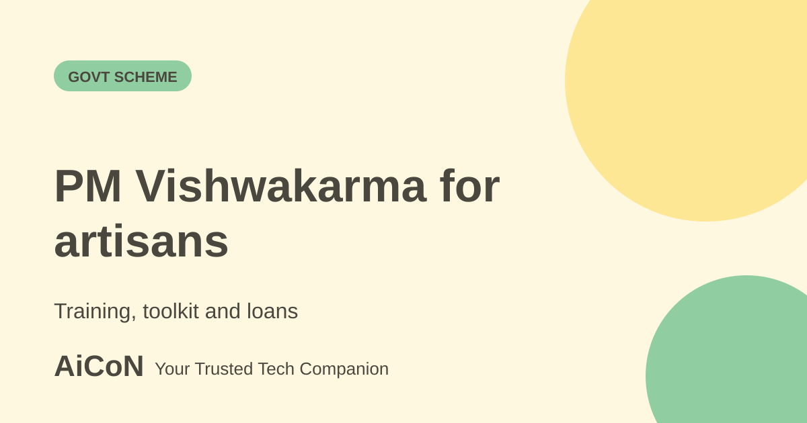

PM Vishwakarma: training, toolkit and loans for artisans
PM Vishwakarma is a central scheme for artisans and craftspeople who work with their hands and tools. It offers skill training, a toolkit incentive and collateral-free loans. Registration is free.

What is PM Vishwakarma?
PM Vishwakarma is a central sector scheme launched on 17 September 2023 to give end-to-end support to artisans and craftspeople in 18 trades. These include carpenter, boat maker, blacksmith, goldsmith, potter, cobbler, mason, basket, mat, broom maker and coir weaver, doll and toy maker, barber and garland maker. The portal lists all 18 trades.
Benefits, per PIB
- Recognition: a PM Vishwakarma certificate and ID card.
- Skill training: basic training of 5 to 7 days and advanced training of 15 days or more, with a stipend of Rs 500 per day.
- Toolkit incentive: up to Rs 15,000 as e-vouchers at the start of basic training.
- Credit support: collateral-free loans up to Rs 3 lakh in two tranches, Rs 1 lakh (18 months) and Rs 2 lakh (30 months), at a concessional interest rate fixed at 5%.
The portal also mentions digital transaction incentives. The first loan tranche needs completed skill assessment and basic training.
Who is eligible?
- Works with hands and tools in one of the 18 family-based traditional trades.
- Self-employed or in the unorganised sector.
- At least 18 years old on the date of registration.
- No loan from a similar central or state self-employment credit scheme in the past 5 years.
- Only one member per family (husband, wife and unmarried children).
- Not in government service, nor a family member in government service.
How to register, step by step
- Check that your trade is on the list of 18 and that you meet the conditions above.
- Keep Aadhaar and your mobile number ready.
- Go to your nearest Common Service Centre (CSC). PIB says CSC agents register artisans using Aadhaar biometric authentication on the portal.
- After enrolment there is a three-step verification, which starts with checks at the local level.
- After verification you get the certificate and ID card, then training and the toolkit incentive.
- Apply for the loan after completing assessment and basic training.
| Registration | Free. Do not pay agents. |
|---|---|
| Loan | Up to Rs 3 lakh at 5%. It is a loan, not a grant. |
| Toolkit | Up to Rs 15,000 as e-vouchers, used at designated centres. |
What changed since the short post?
This expanded guide separates training and toolkit support from repayable loans. Official guidance confirms the 18 trades, one-member-per-family rule and verification through a CSC.
Frequently asked questions
Can two people in one family apply?
No. The benefit is restricted to one member of the family.
Is there a stipend during training?
Yes, Rs 500 per day, per PIB.
Can a goldsmith or barber apply?
Yes, both are among the 18 trades on the portal.
Sources: PM Vishwakarma portal, PIB: PM Vishwakarma scheme details, PIB: eligibility explainer. Checked 6 October 2026.